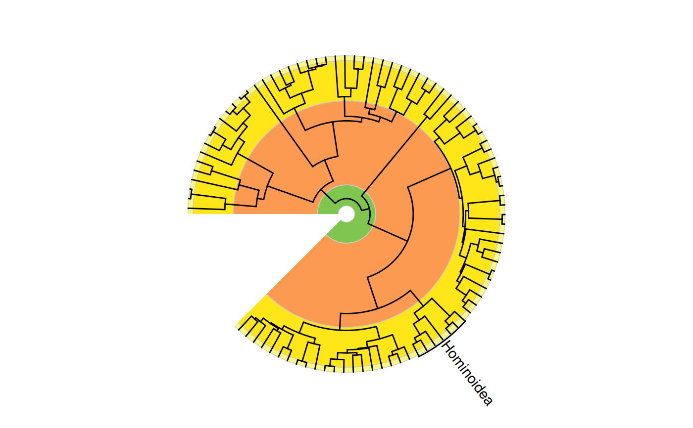
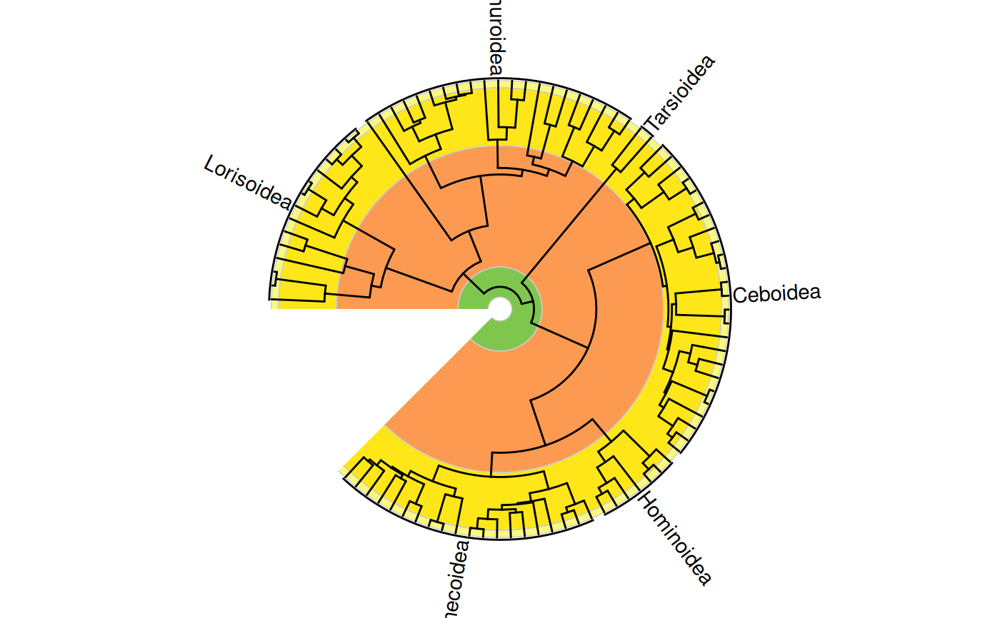
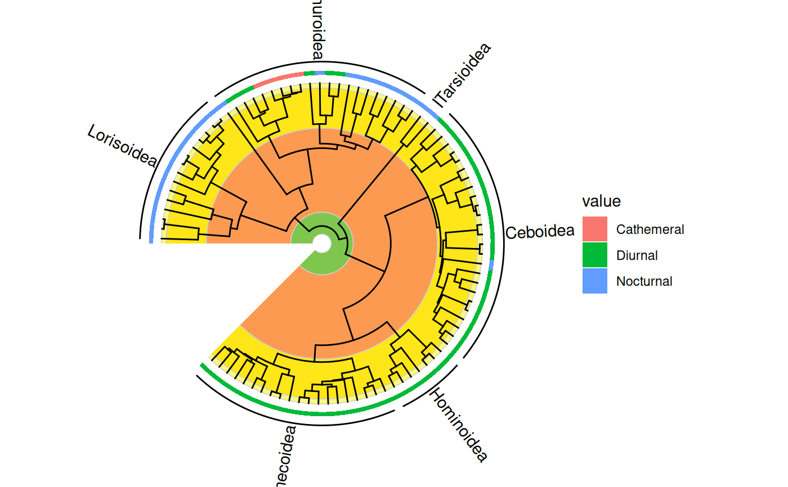

Label clades on a phylogenetic tree plotted with ggtree
Source:R/geom_text_phylo.R
geom_text_clade.RdThis geom adds labels and corresponding vertical bars to specified clades of
a phylogenetic tree that has been plotted using ggtree::ggtree(). It is
therefore very similar to ggtree::geom_cladelab(). However, unlike
ggtree::geom_cladelab(), this geom is intended to work with all coordinate
systems, including coord_geo() and coord_geo_radial().
Usage
geom_text_clade(
mapping = NULL,
data = NULL,
text_geom = "text",
stat = "identity",
position = "identity",
...,
parse = FALSE,
auto_adjust = TRUE,
extend = c(0, 0),
check_overlap = FALSE,
lineend = "butt",
na.rm = FALSE,
show.legend = NA,
inherit.aes = TRUE
)Arguments
- mapping
Set of aesthetic mappings created by
aes(). If specified andinherit.aes = TRUE(the default), it is combined with the default mapping at the top level of the plot. You must supplymappingif there is no plot mapping.- data
The data to be displayed in this layer. There are three options:
If
NULL, the default, the data is inherited from the plot data as specified in the call toggplot().A
data.frame, or other object, will override the plot data. All objects will be fortified to produce a data frame. Seefortify()for which variables will be created.A
functionwill be called with a single argument, the plot data. The return value must be adata.frame, and will be used as the layer data. Afunctioncan be created from aformula(e.g.~ head(.x, 10)).- text_geom
Which geom to use for the text labels. Valid options are "text" for
ggplot2::geom_text()and "label" forggplot2::geom_label().- stat
The statistical transformation to use on the data for this layer. When using a
geom_*()function to construct a layer, thestatargument can be used to override the default coupling between geoms and stats. Thestatargument accepts the following:A
Statggproto subclass, for exampleStatCount.A string naming the stat. To give the stat as a string, strip the function name of the
stat_prefix. For example, to usestat_count(), give the stat as"count".For more information and other ways to specify the stat, see the layer stat documentation.
- position
A position adjustment to use on the data for this layer. This can be used in various ways, including to prevent overplotting and improving the display. The
positionargument accepts the following:The result of calling a position function, such as
position_nudge(). This method allows for passing extra arguments to the position.A string naming the position adjustment. To give the position as a string, strip the function name of the
position_prefix. For example, to useposition_nudge(), give the position as"nudge".
- ...
Other arguments passed on to
layer()'sparamsargument. These arguments broadly fall into one of 4 categories below. Notably, further arguments to thepositionargument, or aesthetics that are required can not be passed through.... Unknown arguments that are not part of the 4 categories below are ignored.Static aesthetics that are not mapped to a scale, but are at a fixed value and apply to the layer as a whole. For example,
colour = "red"orlinewidth = 3. The geom's documentation has an Aesthetics section that lists the available options. The 'required' aesthetics cannot be passed on to theparams. Please note that while passing unmapped aesthetics as vectors is technically possible, the order and required length is not guaranteed to be parallel to the input data.When constructing a layer using a
stat_*()function, the...argument can be used to pass on parameters to thegeompart of the layer. An example of this isstat_density(geom = "area", outline.type = "both"). The geom's documentation lists which parameters it can accept.Inversely, when constructing a layer using a
geom_*()function, the...argument can be used to pass on parameters to thestatpart of the layer. An example of this isgeom_area(stat = "density", adjust = 0.5). The stat's documentation lists which parameters it can accept.The
key_glyphargument oflayer()may also be passed on through.... This can be one of the functions described as key glyphs, to change the display of the layer in the legend.
- parse
If
TRUE, the labels will be parsed into expressions and displayed as described in?plotmath.- auto_adjust
Should upside-down text labels automatically be rotated 180° to improve readability?
- extend
A numeric vector of length 2 indicating how much to extend the vertical bar beyond the minimum and maximum y-values of the clade. The first value extends the bar above the maximum y-value, and the second value extends the bar below the minimum y-value.
- check_overlap
If
TRUE, text that overlaps previous text in the same layer will not be plotted.check_overlaphappens at draw time and in the order of the data. Therefore data should be arranged by the label column before callinggeom_text(). Note that this argument is not supported bygeom_label().- lineend
Line end style (round, butt, square).
- na.rm
If
FALSE, the default, missing values are removed with a warning. IfTRUE, missing values are silently removed.- show.legend
logical. Should this layer be included in the legends?
NA, the default, includes if any aesthetics are mapped.FALSEnever includes, andTRUEalways includes. It can also be a named logical vector to finely select the aesthetics to display. To include legend keys for all levels, even when no data exists, useTRUE. IfNA, all levels are shown in legend, but unobserved levels are omitted.- inherit.aes
If
FALSE, overrides the default aesthetics, rather than combining with them. This is most useful for helper functions that define both data and aesthetics and shouldn't inherit behaviour from the default plot specification, e.g.annotation_borders().
Details
The clades to be labeled are specified using the node aesthetic which
identifies the most recent common ancestor of the clade. The label
aesthetic specifies the text label for each clade. The ggfun::%<+%()
operator should be used to combine custom clade labels with the tree (see
Examples). If no nodes are specified, a label will be added to every tip
by default (like geom_text_phylo()).
The vertical bar for each clade extends from the minimum to the maximum
y-values of all descendant nodes of the specified node, with optional
extensions above and below these values controlled by the extend parameter.
Each label will be plotted center aligned and perpendicular to its
corresponding bar by default. The angle, hjust, and vjust aesthetics
can be used to adjust this. If custom angle values are specified, these
will be added to the default angle as calculated as described above.
As with ggplot2::geom_text(), the limits of axes will not be
expanded to accommodate the new labels, so you may need to extend them
manually using the limits or expand arguments within scale_ or coord_
functions. Note that coord_geo() by default sets expand = FALSE.
Aesthetics
geom_text_phylo() understands the following
aesthetics (required aesthetics are in bold):
x (pulled from the phylogeny by default)
y (pulled from the phylogeny by default)
parent (pulled from the phylogeny by default)
node (pulled from the phylogeny by default)
label (pulled from the phylogeny by default)
alpha
angle
color/colour
family
fontface
group
hjust
lineheight
size
vjust
Alignment
You can modify text alignment with the vjust and hjust aesthetics. These
can either be a number between 0 (left/bottom) and 1 (right/top) or a
character ("left", "middle", "right", "bottom", "center", "top").
There are two special alignments: "inward" and "outward". Inward always
aligns text towards the center, and outward aligns it away from the center.
Note that numeric values outside of [0, 1] will also work and will move the
text beyond the normal alignment positions (e.g., the default hjust value
is -0.02).
Examples
library(ggplot2)
library(ggtree)
library(phytools)
data(primate.tree)
# single annotation
revts(ggtree(primate.tree)) +
geom_text_clade(label = "Hominoidea", node = 114, extend = c(0.1, 0.1)) +
coord_geo_radial()
#> Warning: Unknown or uninitialised column: `subgroup`.
#> Warning: Unknown or uninitialised column: `subgroup`.
#> Warning: Unknown or uninitialised column: `subgroup`.
#> Warning: Unknown or uninitialised column: `subgroup`.

# data frame of clade labels
clades.df <- data.frame(
clade = c("Lorisoidea", "Lemuroidea", "Tarsioidea", "Ceboidea",
"Cercopithecoidea", "Hominoidea"),
node = c(166, 146, 144, 120, 95, 114)
)
revts(ggtree(primate.tree)) %<+% clades.df +
geom_text_clade(aes(label = clade), extend = c(0.1, 0.1)) +
coord_geo_radial()
#> Warning: Removed 173 rows containing missing values or values outside the scale range.
#> Warning: Unknown or uninitialised column: `subgroup`.
#> Warning: Unknown or uninitialised column: `subgroup`.
#> Warning: Unknown or uninitialised column: `subgroup`.
#> Warning: Unknown or uninitialised column: `subgroup`.

# display with other tip data
data(primate.data)
activity <- subset(primate.data, select = "Activity_pattern")
revts(gheatmap(ggtree(primate.tree), activity, offset = -70,
colnames = FALSE, width = 0.03, color = NA)) %<+% clades.df +
geom_text_clade(aes(label = clade), extend = c(0.1, 0.1),
position = position_nudge(x = 10)) +
coord_geo_radial()
#> Scale for y is already present.
#> Adding another scale for y, which will replace the existing scale.
#> Warning: Removed 173 rows containing missing values or values outside the scale range.
#> Warning: Unknown or uninitialised column: `subgroup`.
#> Warning: Unknown or uninitialised column: `subgroup`.
#> Warning: Unknown or uninitialised column: `subgroup`.
#> Warning: Unknown or uninitialised column: `subgroup`.
